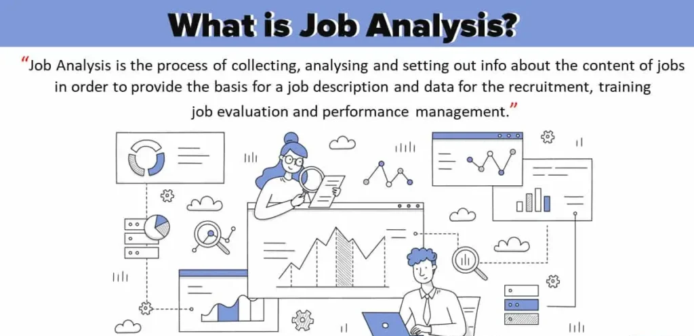
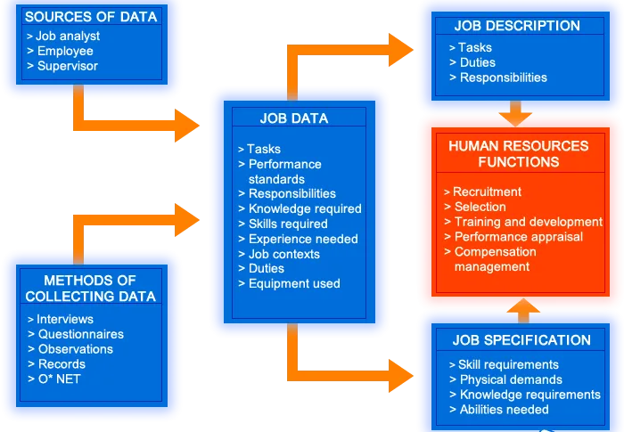
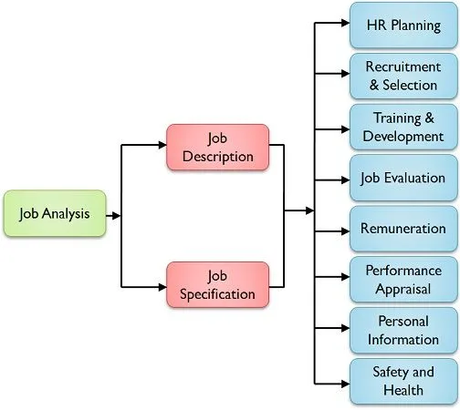

Expanded Nursing Uganda Explanation
Job Analysis should be understood beyond a short definition. Link the concept to patient history, focused assessment, common risks, nursing priorities, documentation and evaluation of outcomes.
01 Job Analysis
The information includes knowledge, skill, and ability, possessed by the incumbent, to perform the job effectively. It is helpful in the preparation of job description and job specification , therefore, HR managers use the data to develop job descriptions and job specifications that are the basis for recruitment, training, employee performance appraisal and career development.
Job description is a document indicating what a job covers, i.e. tasks, responsibilities, duties, powers and authorities, attached to a job.
The ultimate purpose of job analysis is to improve organizational performance and productivity.
02 When is Job Analysis Carried out.
- New Organization : When an organization is newly established, job analysis is conducted to gather information about the jobs that need to be performed in order to achieve the organization’s goals.
- New Job Creation : When a new job is created in an existing organization, job analysis is conducted to determine the duties, responsibilities, and qualifications required for the new position.
- Job Changes : When a job is changed significantly due to changes in technology, methods, procedures, or systems, job analysis is conducted to update the job description and specification.
- Wage and Salary Administration : Before introducing a new wage and salary administration plan, job analysis is conducted to evaluate jobs and determine their relative worth.
- Job Inequities: When employees or managers feel that there are inequities between job demands and the remuneration it carries, job analysis is conducted to identify and address these inequities
03 Common techniques of job analysis include:
- Questionnaire : A set of questions designed to gather information about the job from a current employee or expert.
- Check List : A list of predefined job duties, tasks, and responsibilities that are checked off or rated by current employees or experts.
- Individual Interview : A one-on-one conversation with a current employee or expert to gather detailed information about the job.
- Observation : Direct observation of employees performing their tasks to gather information about the job’s physical demands, work environment, and interactions with others.
- Group Interview: A discussion with a group of current employees or experts to gather information about the job from multiple perspectives.
- Technical Conference : A meeting with experts in the field to gather information about the job’s technical aspects, industry trends, and future developments.
- Diary/Self-Description/Self-Report : A written record kept by current employees describing their daily activities, tasks, and responsibilities.
- Critical Incident : A detailed description of a specific event or situation that occurred on the job, highlighting the job’s critical tasks and behaviors.
- Document Scanning : Reviewing existing documents, such as job descriptions, performance evaluations, and training materials, to gather information about the job.
04 The Process of Job Analysis
Step 1: Data Collection
- Identify the sources from which you will collect data for job analysis. These sources can include job incumbents, supervisors, subject matter experts, and relevant documents.
- Determine the methods you will use to collect data. Common methods include interviews, questionnaires, observations, and reviewing existing documentation.
Step 2: Job Data
- Collect and compile the data obtained from the various sources and methods.
- Analyze the job data to identify key information about the job, such as tasks, responsibilities, knowledge, skills, and abilities required.
Step 3: Job Description
- Create a job description based on the job data. The job description should provide a detailed summary of the job’s purpose, essential functions, responsibilities, and reporting relationships.
- The arrows from the job data should point towards the job description, indicating that the job data is used to inform the creation of the job description.
Step 4: Job Specifications
- Develop job specifications based on the job data. Job specifications outline the qualifications, experience, and other attributes required for successful performance in the job.
- The arrows from the job data should also point towards the job specifications, indicating that the job data is used to inform the creation of the job specifications.
Step 5: Human Resource Functions
- Use the job description and job specifications to inform various human resource functions.
- The arrows from the job description and job specifications should point towards the human resource functions, indicating that these documents are used to guide activities such as recruitment, selection, training, performance management, and compensation.
05 Benefits of Job Analysis to HRM Functions
Job analysis is a valuable tool for effective management of HR activities, ranging from HR planning to the maintenance of a safe and secure work environment and career planning. The information collected through job analysis serves a variety of HRM functions, as described below:
Strategic HR Planning:
- Job analysis helps determine the number and type of personnel needed in the organization in the near future.
- It provides job-related information necessary for HR planning, such as the number of positions required, the skills and qualifications needed, and the potential impact of changes in technology or business strategy.
Recruitment :
- Job analysis helps in attracting and motivating job seekers to apply for organizational jobs by indicating the specific requirements of each job.
- It provides information about the job duties, responsibilities, and qualifications, which can be used to develop targeted recruitment strategies.
Selection :
- Job analysis is essential for selecting qualified candidates to fill job openings.
- It provides information about the knowledge, skills, abilities, and other characteristics required for successful job performance, which can be used to develop selection criteria and assessments.
Training and Development:
- Job analysis helps in designing and delivering effective training and development programs by identifying the skills and knowledge needed to perform specific jobs.
- It also helps in identifying employees who need training and development interventions.
Job Evaluation:
- Job analysis provides the information needed to evaluate jobs and determine their relative worth.
- This information is used to establish wage and salary differentials and ensure that employees are compensated fairly.
Performance Appraisal:
- Job analysis facilitates performance appraisal by providing clear-cut standards of performance for each job.
- It helps managers to assess employee performance against expectations and provide feedback for improvement.
Wage and Salary Administration:
- Job analysis helps in wage and salary administration by indicating the qualifications required for specific jobs and the risks and hazards involved in their performance.
- This information is used to determine appropriate compensation levels and ensure that employees are paid fairly for their work.
Safety and Health:
- Job analysis helps to identify hazardous conditions and unhealthy environmental factors in the workplace.
- This information can be used to develop and implement safety and health measures to minimize the risk of accidents and injuries.
Career Planning:
- Job analysis provides employees with a clear understanding of the opportunities for career growth and development within the organization.
- This information can be used by employees and managers to make informed decisions about career paths and development goals.
06 STAFF /PERFORMANCE APPRAISAL
Click Here
07 Nursing Uganda Clinical Lens
Use Job Analysis as a practical nursing topic, not only a memorized definition. Translate theory into safe decisions, accountability, communication and service improvement.
- What to understand first: define job analysis, identify the normal or expected pattern, then explain what changes when the patient is unwell.
- Why it matters in care: the nurse must recognize risk early, explain findings clearly, document accurately and know when to escalate.
- How to revise it: connect each point to assessment, nursing diagnosis or care problem, intervention, rationale and evaluation.
08 Assessment Guide
- The problem, stakeholders, available resources, policy requirements and ethical issues.
- Risks to patients, staff, confidentiality, quality, costs and continuity.
- Documentation, reporting lines, supervision and evaluation measures.
09 Nursing Priorities, Rationales and Outcomes
- Use evidence, policy and professional standards to guide action.
- Communicate clearly, document decisions and protect confidentiality.
- Evaluate whether the action improves safety, learning or service delivery.
The rationale for these priorities is patient safety: nursing actions should prevent deterioration, reduce discomfort, support recovery and create clear evidence for the next caregiver.
- Expected outcome: The plan is documented, realistic, ethical and improves patient care or learning outcomes.
10 Patient Teaching and Revision Check
- Explain job analysis in simple language the patient or caregiver can repeat back.
- Teach warning signs, medicine or follow-up instructions, hygiene or lifestyle points where relevant.
- For exams, prepare a short answer using: definition, causes or risk factors, signs, assessment, management, complications and prevention.
- For ward practice, document baseline findings, actions taken, patient response and the plan for review.
Illustrations and Diagrams (4)




Related Video Lectures
Watch nursing lecture videos on YouTube for this topic. Opens in a new tab.
Watch on YouTubeExternal link: YouTube may use its own cookies and terms. Nursing Uganda is not affiliated with YouTube.